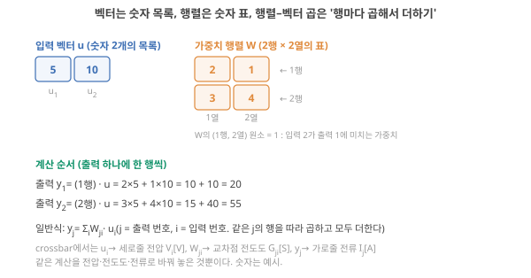
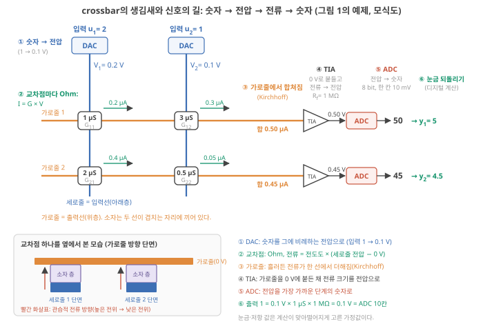
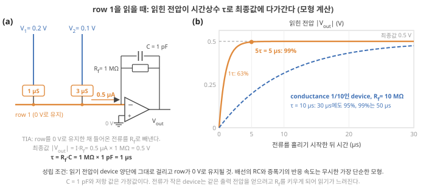
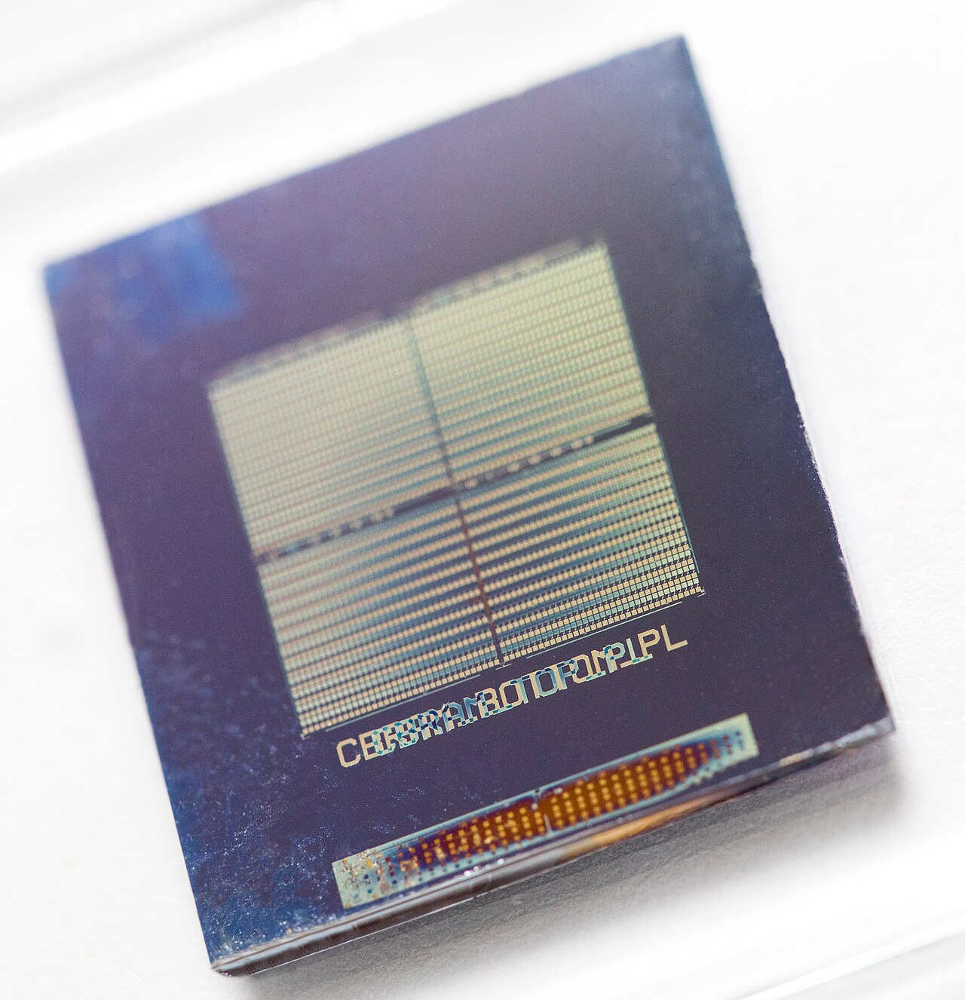

D4. 뉴로모픽 하드웨어는 실제로 어떻게 계산하는가?
Phase 1 · 왜 뉴로모픽 컴퓨팅인가 · 10월 27일 (화)
답에 들어가야 할 것 — crossbar에서 Ohm·Kirchhoff로 하는 VMM, SNN 동작, 시냅스·뉴런 소자에 요구되는 조건(상태 수, 선형성, retention, endurance), 주변회로 비용
기본 경로: ① 사전 테스트(권장) → ② 학습자료(구간마다 잠깐 점검까지) → ③ 백지 회상 → ④ 가르치듯 내 답. ⓪·⑤와 접힌 '심화'·'추가 연습'은 선택입니다. 한 번에 끝낼 필요 없이 구간 단위로 나눠 읽어도 되고, 다시 열면 '지난번 읽던 곳' 링크가 뜹니다.
① 사전 테스트와 먼저 만들어 보기
아직 배우지 않은 내용을 먼저 풀어 봅니다. 많이 틀리는 것이 정상이고, 그게 목적입니다. 먼저 답해 본 문제는 읽을 때 눈에 들어오고 더 오래 남습니다. 문제마다 정답만 보이고, 이유는 학습자료와 ⑤ 다시 풀기에서 봅니다. 다 풀면 학습자료가 열립니다. 건너뛰려면 학습자료 위의 '그냥 읽기'를 누르세요(권장 단계일 뿐 필수는 아닙니다).
② 학습자료
D1에서 crossbar의 식 \(I_j = \sum_i G_{ij} V_i\)를 봤고, D3에서 뇌의 원리가 어느 비용을 줄이는지 조건을 붙였습니다. 오늘은 한 단계 내려가서 하드웨어가 실제로 어떻게 계산하는지를 봅니다. "Ohm과 Kirchhoff가 곱셈과 덧셈을 해 준다"는 문장은 맞지만, 그 문장이 성립하려면 소자와 회로가 갖춰야 할 조건이 길게 붙습니다. 그 조건 목록이 곧 "시냅스 소자·뉴런 소자에 요구되는 사양"이고, 내가 만드는 이온 소자가 어느 사양을 만족하고 어느 사양을 못 만족하는지 적을 수 있게 되는 것이 오늘의 목표입니다. 여섯 개의 학습 구간입니다.
- 기초: 벡터·행렬·행렬–벡터 곱을 숫자로, 그리고 신경망 한 층이 왜 그 계산인가
- crossbar는 어떻게 생겼고, 숫자는 어떤 길을 지나 전압·전류가 되었다가 다시 숫자가 되나? 그 계산은 어떤 조건에서, 얼마나 걸려서 끝나나? (DAC·TIA·ADC 기초 포함)
- 스파이킹 신경망(SNN)은 어떻게 동작하고, LIF 뉴런은 무엇을 하나?
- 시냅스 소자에 요구되는 것: 상태 수, 읽기 선형성과 갱신 선형성·대칭성
- 시냅스 소자에 요구되는 것: retention, endurance, 편차. 추론용과 학습용의 차이
- 주변회로는 왜 비싸고, 소자 하나의 fJ는 시스템에서 무엇이 되나?
학습 구간 1. 기초: 벡터, 행렬, 행렬–벡터 곱
벡터를 숫자 목록으로, 행렬을 숫자 표로 읽고, 2×2 행렬–벡터 곱을 손으로 끝까지 계산하며, 그 계산이 왜 신경망의 뼈대이고 crossbar가 그것을 어떻게 전압·전도도·전류로 바꾸는지 말할 수 있게 된다.
기초 1: 벡터는 숫자 목록, 행렬은 숫자 표
한 줄 복습. 벡터는 숫자 목록, 행렬은 숫자 표, 원소는 표의 숫자 하나입니다. 행렬–벡터 곱 \(\mathbf{y} = W\mathbf{u}\)는 "행 하나와 입력을 자리끼리 곱해 더하면 출력 하나"이고, \(y_j = \sum_i W_{ji} u_i\)로 적습니다(\(W_{ji}\) = 입력 \(i\)가 출력 \(j\)에 미치는 가중치). 처음 설명은 D1 기초: 벡터·행렬·원소와 D2 3구간에 있습니다. 오늘의 예: \(W\) = [[2,1],[3,4]], \(\mathbf{u}\) = (5, 10)이면 \(\mathbf{y}\) = (2×5 + 1×10, 3×5 + 4×10) = (20, 55)(아래 그림 0).
처음부터 다시 읽기
왜 필요한가. D3 기초 7에서 신경망 유닛 하나는 "입력 몇 개에 각각 가중치를 곱해 더한다"였습니다. 유닛이 여러 개면 같은 입력을 놓고 각 유닛마다 다른 가중치 묶음으로 같은 일을 합니다. 이것을 한 번에 적는 기호가 벡터와 행렬이고, 그 계산이 행렬–벡터 곱입니다. 기호를 알아야 Jiang 리뷰의 "MVM"이나 Liang의 "\(W_{out}\)" 같은 말이 읽힙니다.
무엇인가. 벡터는 숫자를 순서대로 늘어놓은 목록입니다. 입력이 두 개이면 \(\mathbf{u} = (5, 10)\). 첫째 입력 \(u_1 = 5\), 둘째 입력 \(u_2 = 10\). 행렬은 숫자를 줄과 칸으로 놓은 표입니다. 출력 유닛이 두 개, 입력이 두 개면 2행 × 2열의 표
\[ W = \begin{pmatrix} 2 & 1 \\ 3 & 4 \end{pmatrix} \]
입니다. 표의 한 칸을 원소라고 하고, 몇 행 몇 열인지로 가리킵니다. \(W_{12}\)(1행 2열)는 1, \(W_{21}\)(2행 1열)은 3입니다. 뜻은 "\(j\)행 \(i\)열 원소 \(W_{ji}\) = 입력 \(i\)가 출력 \(j\)에 미치는 가중치"입니다. 1행은 출력 1의 가중치 묶음 (2, 1), 2행은 출력 2의 가중치 묶음 (3, 4)입니다.
계산 순서 — 출력 하나에 한 행씩. 출력 \(y_1\)은 1행의 숫자를 입력에 하나씩 곱해 더합니다. 출력 \(y_2\)는 2행으로 같은 일을 합니다.
- \(y_1 = W_{11} u_1 + W_{12} u_2 = 2 \times 5 + 1 \times 10 = 10 + 10 = 20\)
- \(y_2 = W_{21} u_1 + W_{22} u_2 = 3 \times 5 + 4 \times 10 = 15 + 40 = 55\)
결과도 목록, 즉 벡터 \(\mathbf{y} = (20, 55)\)입니다. 이것이 행렬–벡터 곱 \(\mathbf{y} = W\mathbf{u}\)이고, 영어 약자로 MVM(matrix-vector multiplication) 또는 VMM이라고 씁니다. 입력 3개·출력 1개였던 D3의 0.62 계산은 1행 × 3열 행렬의 경우입니다.
일반식. 출력이 \(j\)번, 입력이 \(i\)번일 때
\[ y_j = \sum_{i} W_{ji}\, u_i \]
\(\sum_i\)는 "\(i\)를 1부터 끝까지 바꿔 가며 더하라"는 기호입니다. 같은 \(j\)의 행을 따라 곱하고 모두 더합니다. 단위는 문제에 따라 다르지만, crossbar에서는 아래처럼 정해집니다.
crossbar와의 대응. D1 그림 4를 떠올리세요(실제 배열의 생김새와, 숫자가 전압·전류를 거쳐 다시 숫자가 되는 길은 2구간 첫 그림 1-0에서 이 예제 그대로 따라갑니다). 입력 \(u_i\)는 \(i\)번 세로줄에 거는 전압 \(V_i\) [V], 가중치 \(W_{ji}\)는 \(i\)번 세로줄과 \(j\)번 가로줄이 만나는 교차점 소자의 전도도 \(G_{ji}\) [S, 지멘스 = 1/Ω] (소자 하나 전체가 전류를 흘리는 정도, 컨덕턴스. 재료의 성질인 이온전도도 \(\sigma\) [S/m]와는 다른 양이고, 길이 \(L\)·단면적 \(A\)인 막대라면 \(G = \sigma A/L\)), 출력 \(y_j\)는 \(j\)번 가로줄에 모이는 전류 \(I_j\) [A]입니다. 곱셈 \(G_{ji} V_i\)는 Ohm의 법칙(전류 = 전도도 × 전압)이 교차점마다 해 주고, 덧셈 \(\sum_i\)는 같은 가로줄에 흘러든 전류가 합쳐지는 것(Kirchhoff의 전류 법칙)이 해 줍니다. 즉 crossbar는 표의 각 칸을 저항 소자로, 표의 각 행을 전선 하나로 만든 물건입니다.
아래첨자 순서 주의. D1은 같은 소자를 \(G_{ij}\)(세로줄 번호 \(i\)를 먼저)로 적었고, 오늘은 행렬 \(W_{ji}\)(행 = 출력 \(j\)를 먼저)에 맞춰 \(G_{ji}\)로 적습니다. 순서는 표기 약속일 뿐 가리키는 소자는 같습니다. 입력선 \(i\)와 출력선 \(j\)가 겹치는 자리의 소자입니다. 논문마다 순서가 다르므로(Jiang 리뷰는 \(w_{ij} \to G_{ij}\)), 첨자보다 "어느 선이 입력이고 어느 선이 출력인가"를 먼저 확인하세요.

기초 2: 신경망 "한 층"이 곧 행렬–벡터 곱 + 비선형 함수
D3 기초 7의 유닛을 \(N\)개 나란히 두면, 입력 벡터 \(\mathbf{u}\) 하나에 대해 \(N\)개의 출력이 나오고 그 계산이 정확히 \(W\mathbf{u}\)입니다(행이 \(N\)개). 보통은 각 출력에 간단한 비선형 함수(예: 음수면 0으로 자르기)를 한 번 씌워 다음 층의 입력으로 넘깁니다. 이렇게 "행렬–벡터 곱 → 비선형 → 행렬–벡터 곱 → …"을 몇 층 쌓은 것이 인공 신경망이고, 계산량의 대부분이 행렬–벡터 곱입니다. Jiang이 MVM을 "신경망과 신호 처리의 핵심 연산"이라 부르고 Jiang 2026, p.1110, D2가 "가중치 가져오기"를 병목의 주범으로 지목한 이유가 이것입니다. 가중치 행렬의 원소 수는 입력 수 × 출력 수이므로, 입력 1,000개·출력 1,000개면 100만 개입니다.
학습과 추론. 가중치 숫자들을 정답에 맞게 고쳐 가는 것이 학습, 고정된 가중치로 새 입력에 답을 내는 것이 추론입니다. 오늘 5구간에서 이 둘이 소자에 다른 사양을 요구한다는 것을 봅니다.
- 벡터 = 숫자 목록, 행렬 = 숫자 표. \(W_{ji}\) = 입력 \(i\)가 출력 \(j\)에 미치는 가중치. \(y_j = \sum_i W_{ji} u_i\): 행마다 곱해서 더한다.
- 예: \(W\) = [[2,1],[3,4]], \(\mathbf{u}\) = (5,10) → \(\mathbf{y}\) = (20, 55).
- crossbar: \(u_i \to V_i\) [V], \(W_{ji} \to G_{ji}\) [S], \(y_j \to I_j\) [A]. 곱셈은 Ohm, 덧셈은 Kirchhoff.
- 신경망 한 층 = MVM + 비선형. 계산량의 대부분이 MVM Jiang 2026, p.1110.
- 쉬어 가기: 여기까지가 수학이다. 다음 구간은 그것을 전선으로 만들 때 생기는 조건이다.
학습 구간 2. crossbar에서 행렬–벡터 곱: 조건과 시간
crossbar의 어느 선에 무슨 전압이 걸리고 전류가 어디서 더해지는지를 그림으로 따라가고, crossbar가 "순간에" 계산하는 것이 아니라 정착 시간 안에 계산한다는 것, 그리고 Ohm·Kirchhoff가 성립하기 위한 조건(출력선 전위, IR drop, 읽기 선형성, sneak path, 변환)을 숫자와 함께 말할 수 있게 된다. DAC·TIA·ADC는 여기서 처음 설명하고, 커패시터·트랜지스터는 D1의 복습이다.
Jiang 리뷰의 표현으로는 입력 벡터 \(X\)를 전압 \(V\)로, 가중치 \(w_{ij}\)를 전도도 \(G_{ij}\)로 사상하고, Ohm의 법칙과 Kirchhoff의 전류 법칙으로 MVM을 배열 안에서 끝냅니다. Jiang 2026, p.1111, Fig. 1 1구간의 대응 그대로입니다. 오늘은 먼저 그 배열이 실제로 어떻게 생겼고 숫자가 어떤 길을 지나는지 보고, 그다음 이 문장에 붙는 시간과 조건을 봅니다.
배열의 생김새: 어느 선에 무엇이 걸리고, 전류는 어디로 흘러 합쳐지나
무엇을 하려는가. 1구간의 표 계산 \(W\mathbf{u}\)를 전선과 소자가 대신하게 하는 것입니다. 그런데 컴퓨터 안의 입력과 출력은 숫자(0/1 묶음, D1 기초: 비트)이므로, 배열 앞뒤에 숫자와 전압 사이를 오가는 회로가 붙습니다. 그림 1-0은 1구간의 예제(\(W\) = [[2,1],[3,4]], \(\mathbf{u}\) = (5, 10))를 그대로 실은 2×2 배열입니다.
생김새. 금속 선을 아래층에 세로로 두 가닥(입력선, 세로줄), 위층에 가로로 두 가닥(출력선, 가로줄) 깔고, 두 선이 위아래로 겹치는 네 자리마다 얇은 소자 층을 끼웁니다. 그래서 소자 하나의 아래 전극은 세로줄, 위 전극은 가로줄이고, 전류는 소자를 위아래로 관통해 세로줄에서 가로줄로 건너갑니다(그림 왼쪽 아래 단면. 어느 쪽을 위층에 둘지는 설계마다 다릅니다). 세로줄 \(i\)에 건 전압은 그 줄에 붙은 모든 소자에 함께 걸리고, 가로줄 \(j\)는 그 줄에 붙은 모든 소자의 전류를 함께 받습니다. 선 하나를 여러 소자가 나눠 쓰는 이 배치 때문에 곱셈과 덧셈이 동시에 일어납니다.

가로줄 1의 오른쪽 끝을 아무 데도 잇지 않고 떠 있게 두면, 가로줄 1로 모인 전류가 끝으로 흘러 나갈까요? 그때 가로줄 1의 전압은 대략 얼마가 될까요? 아래 단계 ④에서 확인합니다.
① 숫자 → 전압 (DAC). 입력 \(u_1 = 5\), \(u_2 = 10\)은 디지털 숫자(0/1 묶음으로 적힌 값, D3 기초 1)입니다. 세로줄 꼭대기의 DAC(digital-to-analog converter, 숫자를 그에 비례하는 전압으로 바꾸는 회로. 자세히는 아래 기초 5)가 "1 → 0.01 V" 눈금으로 \(V_1\) = 0.05 V, \(V_2\) = 0.10 V를 만들어 세로줄 전체에 겁니다. 이 전압은 소자의 상태를 바꾸지 않을 만큼 작은 읽기 전압입니다(상태를 바꾸는 쓰기는 4구간).
② 교차점마다 곱셈 (Ohm). 가로줄은 0 V로 붙들려 있으므로(④에서 설명) 각 소자 양단에는 "세로줄 전압 − 0 V" = \(V_i\)가 걸리고, 소자는 \(G \times V\)만큼 전류를 가로줄로 흘립니다. 가중치 2, 1, 3, 4를 전도도 2, 1, 3, 4 µS로 써 두었다면 \(G_{11}V_1\) = 2 µS × 0.05 V = 0.10 µA, \(G_{12}V_2\) = 1 × 0.10 = 0.10 µA, \(G_{21}V_1\) = 3 × 0.05 = 0.15 µA, \(G_{22}V_2\) = 4 × 0.10 = 0.40 µA입니다(µS × V = µA). 네 곱셈이 네 자리에서 따로, 동시에 일어납니다.
③ 가로줄에서 덧셈 (Kirchhoff). 한 가로줄로 흘러든 전류는 그 선을 따라 끝으로 갈 수밖에 없고, 선의 한 점에 전하가 쌓이지 않으므로 들어온 전류는 모두 합쳐져 나갑니다(Kirchhoff의 전류 법칙). 가로줄 1: 0.10 + 0.10 = 0.20 µA. 가로줄 2: 0.15 + 0.40 = 0.55 µA. 1구간의 \(y_1\) = 20, \(y_2\) = 55와 같은 비율입니다.
④ 가로줄을 0 V로 붙들고, 전류를 전압으로 (TIA). 가로줄 끝을 아무 데도 잇지 않으면 전류가 빠져나갈 곳이 없어 가로줄에 전하가 쌓이고 전압이 올라갑니다. 전압이 오를수록 소자 양단 전압이 줄어, 들어오는 전류와 거꾸로 나가는 전류가 상쇄되는 값에서 멈춥니다. 가로줄 1이라면 \((2 \times 0.05 + 1 \times 0.10)/(2 + 1) \approx 0.067\) V, 즉 입력 전압들의 가중 평균입니다. 이때 \(G_{11}\) 소자로는 전류가 세로줄 1 쪽으로 거꾸로 흐르고, 끝으로 나가는 합 전류는 0입니다 [Claude 계산]. 그래서 가로줄 끝에는 트랜스임피던스 증폭기(transimpedance amplifier, TIA: 전류를 받아 전압을 내는 증폭기)를 붙입니다. TIA는 가로줄 전압이 0 V에서 조금이라도 벗어나면 그것을 감지해, 되먹임 저항 \(R_f\)를 통해 들어온 전류와 같은 크기의 전류를 빼냅니다. 그 결과 가로줄은 0 V 근처에 머물고(이것을 '가상 접지', virtual ground라 함) \(R_f\) 양단에 \(I \times R_f\)의 전압이 생깁니다. \(R_f\) = 1 MΩ이면 0.20 µA → 0.20 V, 0.55 µA → 0.55 V. 실제 회로의 출력은 부호가 뒤집힌 −0.20 V로 나오지만 크기만 보면 됩니다. [미확인: 일반 회로 지식. Wikipedia "Transimpedance amplifier"(2026-10-25 열람)의 "반전 입력이 가상 접지가 되고, 전달 이득이 −\(R_f\)"라는 설명으로 확인]
⑤ 전압 → 숫자 (ADC). ADC(analog-to-digital converter, 전압을 가장 가까운 단계의 숫자로 바꾸는 회로, 아래 기초 5)가 0.20 V와 0.55 V를 숫자로 바꿉니다. 한 단계가 10 mV인 8 bit ADC(0–2.56 V를 256단계로 나눔)라면 0.20 V → 20, 0.55 V → 55입니다. 진짜 값이 0.204 V였더라도 20이 되어 0.004 V의 차이를 잃습니다. 이것이 양자화 오차입니다.
⑥ 눈금 되돌리기. 입력 1 = 0.01 V, 가중치 1 = 1 µS, \(R_f\) = 1 MΩ이므로 \(y\) 1만큼은 0.01 V × 1 µS × 1 MΩ = 0.01 V, 곧 ADC 한 단계입니다. 그래서 ADC가 낸 20, 55가 그대로 \(y_1\) = 20, \(y_2\) = 55입니다. 곱셈 4번과 덧셈 2번은 ②–③에서 전기가 했고, ①·④·⑤는 숫자와 전기 사이의 통역입니다. 이 통역 회로들이 6구간의 '주변회로'입니다.
비유와 그 한계. ④는 화공의 액위 제어와 닮았습니다. 여러 관(소자)에서 물이 탱크(가로줄)로 흘러들고, 액위 조절기(TIA)가 액위(전압)를 0에 맞추도록 배출량을 조절합니다. 액위가 일정하면 배출량 = 유입량의 합이므로, 배출량을 재면 합을 압니다. 비유가 깨지는 곳: 전기의 '액위'는 물의 양이 아니라 전위이고, 증폭기는 밸브를 여는 대신 자기 출력 전압을 음으로 내려 \(R_f\)로 전류를 끌어냅니다. 그리고 조절기에 응답 지연이 있듯 증폭기와 회로도 즉시 반응하지 못해, 아래의 '정착 시간'이 생깁니다.
계산에 걸리는 시간: 정착
기초 3: 커패시터와 "정착 시간"
왜 필요한가. 위 단계 ②–④는 전류가 곧바로 흐르는 것처럼 적었지만, 전압을 거는 순간 읽히는 값이 최종값으로 즉시 뛰지 않습니다. 회로 곳곳의 커패시터가 먼저 충전되어야 하고, 충전되는 동안 읽히는 값이 서서히 최종값에 다가갑니다. 이 "서서히"가 얼마나 긴지가 crossbar의 계산 시간입니다.
무엇인가(복습). 커패시터는 두 도체가 절연체를 사이에 두고 마주 보며 반대 부호의 전하를 담는 부품이고, 전하 \(Q\) [C]와 전압 \(V\)의 관계는 \(Q = CV\)입니다(\(C\): 정전용량 [F, 패럿], D1 기초: 커패시터). 일부러 붙인 부품이 아니어도, 전선이 기판 위나 다른 전선 곁을 지나가기만 해도 작은 정전용량이 생깁니다. 이것을 기생(원치 않는) 정전용량이라 합니다. 전기화학의 전기이중층(electric double layer, EDL)도 커패시터입니다. 전극에 전압을 걸면 전해질 속 반대 부호 이온이 전극 표면에 1 nm 안팎의 아주 얇은 층으로 모여, 전극의 전하와 이 이온층이 아주 가까이 마주 본 두 판 노릇을 합니다(정식 설명은 D19–D20). 판 사이가 매우 얇아 면적당 정전용량이 커서, 대략 10–40 µF/cm²로 소개됩니다. 이 범위는 공개 백과 요약(Wikipedia "Double-layer capacitance", 2026-10-24 열람)이 Halper & Ellenbogen 2006(MITRE 보고서)을 인용해 적은 값이고, 같은 글은 0.3 nm 층을 가정한 Helmholtz 모형의 추정값 약 18 µF/cm²를 Srinivasan 2006(교과서)에서 인용합니다. 전기화학 리뷰도 매끈한 금속 전극의 대표값을 약 20 µF/cm²(논의 범위 15–50)로 적습니다 Ge 2020, p.3216. 값은 전해질·전극·전압에 따라 다르고, 뒤의 여러 날이 쓰는 "계면 용량 10 µF/cm²" 가정은 이 범위 아래쪽의 어림값입니다. 해석
입력이 들어오면 무슨 일이. 저항 \(R\)(= 1/\(G\))을 통해 커패시터를 충전한다고 합시다. 처음에는 커패시터가 비어 있어 저항 양단의 전압 차가 크므로 전류가 크고 빨리 찹니다. 찰수록 남은 전압 차가 줄어 전류도 줄고, 차는 속도도 느려집니다. 그래서 "최종값까지 남은 차이"가 같은 시간마다 같은 비율로 줄어드는 지수 곡선이 되고, 그 시간 척도가 시간상수 \(\tau = RC = C/G\) [s]입니다. 1τ 뒤에는 남은 차이가 처음의 37%(최종값의 63% 도달), 3τ 뒤 5%(95%), 5τ 뒤 1%(99%)입니다. 이것을 정착(settling)이라 하고, 원하는 비율에 이르는 시간이 정착 시간입니다. D1에서 \(\tau = RC\)를 "원래로 돌아가는 시간의 척도"로 본 것과 같은 양입니다.
작은 숫자로. \(C\) = 1 pF(10⁻¹² F), \(G\) = 6 µS(6×10⁻⁶ S)이면 \(\tau\) = 10⁻¹²/6×10⁻⁶ ≈ 1.67×10⁻⁷ s = 167 ns. 99%까지 약 0.8 µs.
작은 예시. 그림 1은 소자 세 개(\(G\) = 1, 3, 2 µS)에 \(V\) = 0.1, 0.2, 0.1 V를 건 한 출력선입니다. 최종 전류는 \(1 \times 0.1 + 3 \times 0.2 + 2 \times 0.1\) = 0.9 µA(µS × V = µA)입니다. 이 전류를 받는 것이 위 단계 ④의 TIA입니다. 출력 전압 \(I R_f\)를 입력과 비슷한 크기로 얻으려면 \(R_f\)를 대략 \(1/\sum G\) = 1/(6 µS) ≈ 167 kΩ로 둡니다. 그러면 \(I R_f = \sum G_i V_i / \sum G_i\), 곧 입력 전압들의 가중 평균이 되어 입력과 같은 크기입니다(0.9 µA × 167 kΩ = 0.15 V). 실제 TIA에는 \(R_f\)와 나란히 작은 커패시터 \(C\)가 붙어 있습니다(동작을 안정시키려고 일부러 붙이거나, 부품·배선의 기생 정전용량으로 생김 [미확인: Wikipedia "Transimpedance amplifier"의 되먹임 커패시터 설명으로 확인]). 전류가 계단처럼 들어오면 출력은 이 \(C\)를 \(R_f\)를 통해 충전하며 따라가므로, 시간상수가 \(\tau = R_f C \approx C/\sum G\)이고, \(C\) = 1 pF로 가정하면 ≈ 167 ns입니다. 99%에 이르려면 약 5τ ≈ 0.8 µs가 걸리고, 그 전에 읽으면 덜 정착된 값을 읽습니다. 이것은 읽기 회로를 RC 하나로 줄인 가장 단순한 모형이고, 실제 정착 시간은 입력선·출력선의 배선 저항·정전용량과 증폭기의 반응 속도가 함께 정합니다 [해석, 모형]. 전류가 작은 소자일수록(\(\sum G\)가 작을수록) 같은 크기의 신호를 얻는 데 더 큰 \(R_f\)가 필요해 읽기가 느려지기 쉽다는 점도 이 모형에서 보입니다. Jiang도 전도도를 낮추면 IR drop과 전력이 줄어 큰 배열에 유리하지만, 너무 낮으면 신뢰성 있게 읽기 어려워진다고 씁니다 Jiang 2026, p.1113–1114. 흔히 "crossbar는 한 순간에 계산한다"고 말하지만, 정확히는 "정착 시간 안에 모든 곱셈·덧셈이 동시에 끝난다"입니다(D1에서 "전류가 정착하면 동시에 나온다"고 한 그 정착). 가로줄이 1,000개라도 정착 시간은 (출력선마다 비슷하다면) 같으므로, 곱셈·덧셈 수천 번이 같은 0.8 µs 안에 끝나는 것이 crossbar의 병렬성(여러 계산을 한꺼번에 하는 것)입니다.

Ohm·Kirchhoff가 성립하기 위한 조건
D1의 (0)–(4)에 오늘 Jiang 리뷰의 오차원 분석을 붙입니다.
- 출력선 전위가 0 V로 유지되어야 식이 성립합니다. 소자 양단에 걸리는 전압이 "입력 전압 − 출력선 전압"이기 때문입니다. 실제로는 TIA(위 단계 ④)가 출력선을 0 V에 붙들어 둡니다. 붙들지 못하면(끝이 떠 있거나 단순한 저항만 달면) 출력선 전압이 올라가 소자마다 \(V_i\)보다 작은 전압이 걸리고, 극단적으로는 단계 ④처럼 합 전류가 0이 됩니다. 해석
- IR drop. 전선에도 저항이 있어서, 전류 \(I\)가 저항 \(R\)인 전선을 지나면 \(IR\)만큼 전압이 떨어집니다. 배열이 커지면 전선이 길어지고 전류가 합쳐져 커지므로, 먼 소자에는 읽기 전압이 덜 걸립니다. Jiang은 이 효과가 배열이 커질수록(예: 128×128 초과) 심해진다고 씁니다. Jiang 2026, p.1114 왜 커질수록 심해지나(모형). 가로줄 하나에 소자 100개가 붙어 각각 1 µA를 흘리고, 이웃 교차점 사이 배선 저항이 2 Ω이라고 합시다(가정값). TIA에서 가장 먼 칸부터 세면, 첫 구간에는 1 µA, 다음 구간에는 2 µA, …, TIA 바로 앞 구간에는 100 µA가 흐릅니다(전류가 모이며 흐르므로). 구간마다 떨어지는 전압 \(IR\)을 모두 더하면 2 Ω × (1 + 2 + … + 100) µA = 2 Ω × 5,050 µA ≈ 10 mV입니다. TIA 쪽은 0 V로 붙들려도 가장 먼 칸의 출력선은 약 10 mV 떠 있으므로, 0.1 V로 읽던 그 칸의 소자에는 0.09 V만 걸려 전류가 약 10% 작아집니다. 줄의 소자 수를 두 배로 하면 구간 수도, 모이는 전류도 두 배라 강하는 약 네 배가 됩니다. [Claude 계산, 입력선 쪽 강하와 그로 인한 전류 변화는 무시]
- 읽기 I–V의 선형성. 소자의 전류가 전압에 비례하지 않으면 출력 전류가 Ohm의 법칙이 예측하는 값에서 벗어나 가중합에 오차가 섞입니다. 읽기 전압을 "의사 선형(pseudo-linear) 하위 영역"(전류가 거의 전압에 비례하는 작은 전압 구간)으로 제한하는 전략이 있지만 소자 간 편차 때문에 효과가 제한된다고 Jiang은 씁니다. Jiang 2026, p.1114, 1117 이것은 4구간의 "갱신 선형성"과 다른 성질입니다.
- sneak path. 격자에서는 선 하나를 여러 소자가 나눠 쓰므로, 목표 소자가 아닌 이웃 소자들을 거쳐 돌아오는 길(sneak path, '몰래 새는 길')이 생깁니다. Jiang은 이 기생 전류가 셀의 쓰기와 읽기 정확도를 떨어뜨린다고 씁니다 Jiang 2026, p.1114. 언제 문제가 되는지 나눠 봅니다. (가) 칸 하나만 읽거나 쓸 때(가중치를 써 넣고 확인하는 write-verify 등): 목표 칸의 두 선에만 전압을 걸고 나머지 선을 떠 있게 두면, 그림 1-1 b처럼 이웃 소자 셋을 직렬로 거치는 우회 전류가 목표 전류에 섞입니다. 쓰기라면 같은 선을 쓰는 이웃 칸에도 쓰기 전압의 일부가 걸려 값이 조금씩 바뀔 수 있습니다 해석. (나) MVM처럼 모든 입력선을 구동하고 모든 출력선을 0 V로 붙들 때: 이상적으로는 모든 선의 전위가 정해져 있어 각 소자에 걸리는 전압이 "세로줄 전압 − 0 V"로 고정되므로 우회 경로가 따로 생기지 않습니다. 그러나 IR drop으로 선 전위가 정해진 값에서 벗어나면 그만큼 섞입니다 [해석, 회로 원리]. 흔한 해결책은 교차점마다 "이 칸만 연결하라"는 스위치(트랜지스터)를 붙이는 것입니다(아래 기초 4). Jiang은 작은 읽기 전압에서 전류가 아주 작은 자기 정류형(self-rectifying) memristor(memristor: 지나간 전압·전류에 따라 저항이 바뀌고 그 값을 기억하는 두 단자 소자, 아래 기초 4)도 유망한 해법으로 들되 대규모 검증이 더 필요하다고 씁니다 Jiang 2026, p.1114. 정류성 이온 다이오드가 읽기 선형성(조건 3)에는 불리하지만 이 점에서는 장점이 될 수도 있다는 뜻입니다 해석.

기초 4: 트랜지스터는 전압으로 여닫는 스위치
무엇인가. 트랜지스터에는 게이트·소스·드레인 세 단자가 있습니다. 게이트에 거는 전압으로 소스와 드레인 사이에 전류가 흐를지(켜짐) 말지(꺼짐)를 정하는 부품입니다. 수도꼭지에 비유하면 게이트 전압이 손잡이, 소스–드레인 전류가 물입니다(D1 기초: 트랜지스터). 손잡이를 돌리는 데는 물이 필요 없듯, 게이트에는 전류가 거의 흐르지 않고 전압만 걸립니다.
crossbar에서의 쓰임. 교차점의 가중치 소자로는 흔히 memristor(지나간 전압·전류에 따라 저항이 바뀌고 그 값을 기억하는 두 단자 소자, 이름은 memory + resistor)를 씁니다. 교차점마다 memristor 하나에 트랜지스터 하나를 직렬로 붙여, 읽고 싶은 줄의 트랜지스터만 켜면 sneak path가 막힙니다. 이 구조를 1T1R(one transistor, one resistor)이라 합니다. MVM을 할 때는 계산에 쓸 칸들의 트랜지스터를 함께 켜고, 가중치 하나를 써 넣을 때는 그 칸만 켭니다. Jiang은 트랜지스터가 쓰기 전류를 안정적으로 제한해 전도도를 정밀하게 맞추는 데도 도움이 된다고 씁니다 Jiang 2026, p.1114. Liang은 memristor 배열의 각 셀이 보통 1T1R 구조로 sneak path를 피한다고 쓰고 Liang 2024, p.198, Roadmap도 큰 배열에서 sneak path가 읽기 정확도를 떨어뜨린다고 씁니다. Roadmap 2026, p.8112 1T1R은 소자마다 트랜지스터가 붙는다는 뜻이므로 면적(밀도)과 공정의 비용입니다 Jiang 2026, p.1114. CMOS는 nMOS·pMOS를 짝지은 회로 방식이자, 오늘날 칩 대부분을 만드는 표준 실리콘 공정을 가리킬 때도 쓰는 말입니다(D1 기초: nMOS·pMOS와 CMOS). 1T1R의 트랜지스터와 배열 바깥의 주변회로가 이 공정으로 만들어지므로, 새 소자를 그 위에 함께 올릴 수 있는지가 중요해집니다. 논문의 "CMOS 호환"이 공정·재료·온도·집적 중 무엇을 뜻하는지는 D1에서 본 것처럼 따로 확인해야 합니다.

- 변환. 입력이 숫자(디지털)면 전압으로 바꾸는 장치가, 출력 전류를 숫자로 받으려면 거꾸로 바꾸는 장치가 필요합니다.
기초 5: DAC와 ADC — 숫자와 전압 사이의 통역
왜 필요한가. crossbar는 전압을 받고 전류를 냅니다(아날로그, D3 기초 1). 컴퓨터는 0/1 묶음(디지털)을 다룹니다. 둘이 이야기하려면 통역이 필요합니다.
무엇인가. DAC(digital-to-analog converter)는 숫자를 받아 그에 비례하는 전압을 만듭니다. 비트(bit)는 0 또는 1을 담는 한 자리이고, \(b\)자리면 \(2^b\)가지 숫자를 나타냅니다(D3 기초 1). 그래서 3 bit DAC는 0–7의 숫자를 8단계의 전압으로 바꿉니다. 예: 한 단계가 0.1 V인 3 bit DAC에 숫자 5(이진수 101)를 넣으면 0.5 V가 나옵니다. ADC(analog-to-digital converter)는 전압·전류를 받아 가장 가까운 단계의 숫자로 바꿉니다. 8 bit ADC는 입력 범위를 256단계로 나눕니다.
입력이 들어오면 무슨 일이. ADC의 기본 부품은 비교기(comparator)입니다. 두 전압을 받아 "입력이 기준보다 높으면 1, 낮으면 0"을 내는 회로입니다. 흔한 방식인 축차 비교형(successive approximation, SAR) ADC는 내부 DAC가 만든 기준 전압과 입력을 비교하는 일을 비트 수만큼 반복하며, 범위를 반씩 좁혀 갑니다(스무고개처럼) [미확인: Wikipedia "Successive-approximation ADC"(2026-10-25 열람)로 확인]. 3 bit, 범위 0–0.8 V(한 단계 0.1 V)인 ADC에 0.55 V를 넣어 봅니다.
① 맨 윗자리. 기준 0.4 V(범위의 절반)와 비교: 0.55 > 0.4 → 1. 답은 0.4–0.8 V 안에 있다.
② 둘째 자리. 기준 0.6 V(0.4–0.8의 절반)와 비교: 0.55 < 0.6 → 0. 답은 0.4–0.6 V 안.
③ 셋째 자리. 기준 0.5 V와 비교: 0.55 > 0.5 → 1. 답은 0.5–0.6 V 안.
결과. 이진수 101 = 5, 곧 "0.5 V 단계". 진짜 값 0.55 V와의 차이 0.05 V가 양자화 오차다. 비교 3번으로 3 bit를 얻었다.
비트가 하나 늘면 비교가 한 번 늘고, 단계 폭이 절반이 되어 비교기가 그만큼 더 작은 전압 차이를 가려내야 합니다. 그래서 "정밀한 ADC는 크고 느리고 전력을 많이 쓰기 쉽다"가 됩니다. [해석, 일반 원리]
오차. DAC·ADC는 오프셋(0을 넣어도 0이 안 나옴)·이득(입력 대 출력 그래프의 기울기가 1이 아님. D7에서 배울 학습의 '기울기(gradient)'와는 다른 뜻) 오차가 있고, ADC는 단계 사이를 표현 못 하는 양자화 오차와 입력 범위 제한이 있습니다. Jiang 2026, p.1114 Liang은 (RC 하드웨어의 한 구현 방식을 설명하며) 비용을 줄이려고 보통 4–10 bit의 낮은 정밀도 ADC/DAC를 쓸 수 있지만 잡음 영향을 따로 따져야 한다고 씁니다. Liang 2024, p.195
언제 필요한가. 다음 단계가 디지털일 때입니다. 다음 단계도 아날로그(예: 전류를 바로 커패시터에 쌓는 3구간의 LIF 뉴런)이면 ADC 없이 전류를 그대로 씁니다. 그래서 "ADC가 필수"가 아니라 "다음 단계가 디지털일 때 필요"입니다.
- 정착 시간 (복습)
- 입력을 바꾼 뒤 출력이 최종값의 일정 비율 안에 들어오는 시간. 1차 RC계에서 99%까지 약 5τ. 기초 3
- IR drop
- 배선 저항 \(R\)에 전류 \(I\)가 흐르면 생기는 전압 강하 \(IR\). 먼 소자일수록 실제 읽기 전압이 작아진다 Jiang 2026, p.1114.
- sneak path / 1T1R (복습)
- 이웃 소자를 돌아 흐르는 전류 / 소자마다 트랜지스터 스위치를 붙여 막는 구조 Liang 2024, p.198. 기초 4
- TIA (트랜스임피던스 증폭기)
- 출력선을 0 V 근처(가상 접지)에 붙든 채, 들어온 전류를 되먹임 저항 \(R_f\)로 빼내 \(I R_f\) 크기의 전압으로 바꾸는 증폭기. 그림 1-0의 ④. 출력선 전위를 고정해 Ohm·Kirchhoff의 조건 1을 지킨다.
- DAC / ADC (복습)
- 숫자 → 전압 / 전압·전류 → 숫자 변환기. 다음 단계가 디지털일 때 필요. 기초 5
- 의사 선형 영역 (pseudo-linear region)
- 비선형 I–V 소자에서 전류가 거의 전압에 비례하는 작은 전압 구간. 읽기를 여기로 제한하면 곱셈 오차가 줄지만 신호도 작아진다.
내 이온 소자의 I–V 곡선을 떠올려 보세요. 정류성이 있다면(ionic diode) 읽기 I–V는 선형이 아닙니다. 여기서 정류는 전기 정류, 즉 한 방향으로 전류가 더 잘 흐르는 성질입니다(증류탑의 정류와 다른 말). 같은 크기의 +전압과 −전압에서 전류 크기가 다르므로, 전류가 전압에 비례한다는 \(I = GV\)가 성립하지 않습니다. 그 소자를 crossbar 가중치로 쓰려면 어떤 전압 범위에서 읽어야 하고, 그 범위에서 전류는 얼마나 작아지나요? 전류가 작아지면 정착 시간(\(\tau = C/G\)에서 \(G\)가 작아짐)과 ADC 요구는 어떻게 바뀌나요? 답할 수 없는 항목을 적어 두세요.
- crossbar MVM은 정착 시간 안에 끝나는 병렬 연산이다. 읽기 회로를 RC 하나로 줄인 모형에서 \(\tau \approx C/\sum G\)(1 pF, 6 µS면 167 ns), 99%까지 약 5τ [해석, 모형]. 전류가 작을수록 읽기가 느려지기 쉽다.
- 조건: 출력선 0 V 유지, IR drop(>128×128에서 악화) Jiang 2026, p.1114, 읽기 I–V 선형성(의사 선형 영역) Jiang 2026, p.1117, sneak path 차단(1T1R) Liang 2024, p.198.
- ADC는 다음 단계가 디지털일 때 필요하다. 낮은 정밀도(4–10 bit)로 비용을 줄이되 잡음을 따로 본다 Liang 2024, p.195.
- 쉬어 가기: 다음 구간은 값 대신 스파이크를 쓰는 쪽이다.
학습 구간 3. 스파이킹 신경망과 LIF 뉴런
LIF 뉴런의 세 동작(쌓기·새기·쏘기)을 식과 회로로 설명하고, 하이드로겔로 만든 실제 예(Lan 2026)에서 무엇이 적분을 하고 무엇이 문턱을 만드는지 가려낼 수 있게 된다.
직관. 2구간의 crossbar는 "값"을 전압으로 넣고 전류로 받습니다. 스파이킹 신경망(SNN, D3 기초 7)은 값 대신 스파이크(짧은 펄스)를 주고받습니다(D3 기초 7의 복습: 스파이크는 높이가 거의 같고, 있음·시각·빈도가 정보). 각 뉴런은 들어오는 스파이크를 가중치만큼 받아 쌓고(integrate), 쌓인 것이 서서히 새며(leaky), 문턱을 넘으면 스파이크를 내고(fire) 초기화됩니다. 이것이 LIF(leaky integrate-and-fire) 뉴런이고, Roadmap은 인공 뉴런에 "시간 정보를 동적으로 누적하고 스파이크를 내보내는 LIF 기능이 필수"라고 씁니다. Roadmap 2026, p.8116
왜 식이 필요한가. "쌓고 새고 쏜다"를 숫자로 예측하려면, 쌓이는 양(막전위)이 시간에 따라 어떻게 변하는지 적어야 합니다. 가장 단순한 LIF 모형:
\[ C \frac{dV}{dt} = -\frac{V}{R} + I(t), \qquad V \ge V_{th} \Rightarrow \text{스파이크}, \; V \leftarrow 0 \]
- \(V\) [V]: 막전위(쌓인 양). 회로에서는 커패시터(기초 3) 전압
- \(C\) [F]: 쌓는 그릇의 크기(정전용량). \(R\) [Ω]: 새는 길의 저항. \(\tau_m = RC\) [s]가 "얼마나 빨리 새는가"
- \(I(t)\) [A]: 시냅스를 거쳐 들어오는 입력 전류. 시간 \(t\)에 따라 변함
- \(\frac{dV}{dt}\): \(V\)가 1초에 얼마나 변하는가(변화율). 좌변은 "그릇에 쌓이는 속도", 우변은 "들어오는 전류 − 새는 전류"
- \(V_{th}\) [V]: 문턱. 넘으면 스파이크를 내고 \(V\)를 0으로 되돌림
읽는 순서: 우변을 계산해 \(V\)의 변화 속도를 얻고, 아주 짧은 시간 동안 \(V\)를 그만큼 바꾸고, 문턱을 넘었는지 보고, 반복합니다. 입력이 일정하면 \(V\)는 \(I\tau_m/C\) (= \(IR\))라는 값에서 멈춥니다. 이유: \(V\)가 오를수록 새는 전류 \(V/R\)가 커지다가, 들어오는 전류 \(I\)와 같아지면(\(V/R = I\), 즉 \(V = IR\)) 우변이 0이 되어 더는 변하지 않습니다. 이 값이 \(V_{th}\)보다 작으면 영원히 발화하지 않습니다.
비유와 그 한계. 바닥에 작은 구멍이 난 탱크에 물을 일정하게 붓는 것과 같습니다. 수위(\(V\))가 오를수록 구멍으로 새는 양이 늘어, 붓는 양과 새는 양이 같아지는 수위에서 멈춥니다. 탱크 단면적이 \(C\), 구멍의 '새기 어려움'이 \(R\)에 해당합니다. 깨지는 곳: 실제 탱크의 유출은 수위에 정확히 비례하지 않을 수 있고(이 모형은 비례한다고 둠), 탱크에는 "문턱을 넘으면 한꺼번에 비우는" 동작이 없습니다. 발화·리셋은 문턱 스위칭 소자 같은 별도의 부품이 붙여 줍니다(아래).
작은 예시. 그림 2는 \(\tau_m\) = 20 ms, \(C\) = 1 nF로 계산한 것입니다. 12 nA를 넣으면 멈추는 값 \(I \tau_m / C\) = 12×10⁻⁹ × 0.02 / 10⁻⁹ = 0.24 V로 문턱 0.5 V에 못 미쳐 스파이크가 없고, 40 nA를 넣으면 0.8 V를 향해 오르다 0.5 V에서 쏘고 리셋되기를 반복해 0.2 s 동안 10개가 나옵니다. 입력이 끊기면 전위는 \(\tau_m\)로 샙니다. 이 모형이 D3에서 본 "이온 축적 = 적분, 역확산 = 누설(위의 '새기')" Roadmap 2026, p.8108의 회로판입니다.

이것을 소자로 만들면. Roadmap은 휘발성 memristor(전압이 문턱을 넘으면 급히 전류를 흘리고, 전압이 내려가면 저절로 고저항으로 돌아오는 소자. redox-diffusive, Mott, OTS는 작동 원리에 따른 종류 이름)가 LIF를 흉내 낼 수 있고, 커패시터와 저항을 붙여 자기 리셋 LIF 뉴런을 만들면 주변회로가 단순해진다고 씁니다. 이 구성에서 병렬 커패시터의 전압이 막전위이고, 휘발성 소자가 "이온 채널처럼" 문턱을 넘으면 급히 전류를 흘리며, 소자의 이완 동역학이 누설을 구현합니다. 적분 시간상수는 소자의 이완 동역학을 설계하거나 외부 커패시터를 더해 조절합니다. Roadmap 2026, p.8116
폴더의 Lan 2026(Adv. Mater.)이 하이드로겔로 이것을 만든 예입니다. 같은 PAAm/PVA/Ag 나노플레이크 하이드로겔에서 PVA 함량을 바꿔 비휘발 아날로그 memristor(시냅스 역할)와 휘발성 문턱 스위칭 memristor(소마 역할)를 얻고, 둘을 커패시터(1 µF)·저항(100 Ω)과 연결해 LIF 뉴런을 구성했습니다. 문턱 스위칭 소자의 \(V_{th}\) = 0.56 V, \(V_{hold}\) = 0.11 V, 스파이크당 에너지는 저자 계산으로 0.6 V × 40 µA × 30 µs = 0.72 nJ입니다. Lan 2026, p.5, 7, Fig. 5 주의할 점이 둘 있습니다. (1) 이 소자의 문턱 스위칭은 은(Ag)의 금속 전도 경로가 생겼다 끊어지는 현상입니다. 전압이 \(V_{th}\)에 이르면 Ag⁺ 이온이 움직여 환원된 Ag 원자와 Ag 나노플레이크가 위아래 전극을 잇는 경로를 만들어 저저항이 되고, \(V_{hold}\) 아래로 내려가면 Ag 원자가 흩어지며 경로가 끊겨 고저항으로 돌아갑니다 Lan 2026, p.4. 적분은 외부 커패시터가 합니다. 이온 고분자의 이온 동역학이 적분을 하는 것이 아닙니다. 해석 (2) 0.72 nJ은 스파이크 하나의 소자 에너지이고, 2구간에서 본 주변회로·측정 회로는 빠져 있습니다.

SNN 한 층의 동작을 단계로.
1. 입력 스파이크 도착. 어느 입력선에 스파이크가 오면 그 세로줄에만 짧은 전압 펄스가 걸린다. 스파이크가 없는 세로줄은 조용하다(사건 구동, D3 기초 4).
2. 가중치 곱. 펄스가 걸린 세로줄의 교차점 소자들이 각자 전도도만큼 전류를 가로줄로 흘린다(Ohm). 한 가로줄에 모인 전류가 그 뉴런의 입력 I(t)다(Kirchhoff). 가로줄 하나가 뉴런 하나에 이어진다.
3. 적분·누설. 전류가 커패시터에 쌓이고(V 상승), 동시에 저항으로 샌다(V 하강). 그림 2의 곡선.
4. 발화·리셋. V가 문턱을 넘으면 휘발성 소자가 켜져 커패시터가 급히 방전되고(스파이크), 다음 층으로 사건을 보낸 뒤 V는 0 근처로 돌아간다.
가로줄과 뉴런을 이을 때의 조건. 2구간에서는 TIA가 가로줄을 0 V로 붙들었습니다. 그런데 가로줄을 뉴런의 커패시터에 그대로 이으면 가로줄 전압이 막전위 \(V\)만큼 올라가, 각 소자에는 \(V_i\) 대신 \(V_i - V\)가 걸리고 곱셈이 막전위에 따라 틀어집니다(2구간 조건 1). 그래서 가로줄을 0 V에 붙든 채 전류만 받아 커패시터에 쌓는 회로를 쓰거나, 막전위를 입력 펄스보다 훨씬 작은 범위에서 쓰는 식으로 설계합니다 해석. 그림 1의 TIA(되먹임에 \(R_f\)와 \(C\)를 나란히)는 사실 LIF의 '새는 적분기'와 회로 모양이 같습니다. 가로줄을 0 V로 붙든 채 들어온 전류가 \(C\)에 쌓이고 \(R_f\)로 새므로 \(C\,dV/dt = I - V/R_f\)(크기만 볼 때)가 되어 위 LIF 식과 같은 꼴이고, 다른 것은 시간상수입니다. 2구간에서는 τ가 167 ns로 짧아 '지금의 전류'를 읽었고, 뉴런으로 쓰려면 τ를 수십 ms로 길게 해 '최근 전류의 누적'을 읽고 문턱·리셋을 붙입니다 [해석, 회로 원리].
2구간의 MVM과 다른 점은 입력이 "값"이 아니라 "사건"이고, 뉴런이 적분·문턱·리셋이라는 시간 동역학을 갖는다는 것입니다. Roadmap이 RRAM(저항 변화 메모리, memristor의 한 종류) 시냅스와 아날로그 integrate-and-fire 뉴런으로 만든 SNN 칩이 MNIST(손글씨 숫자 그림 분류 과제)에서 시냅스·뉴런 합산으로 스파이크당 3.6 pJ를 보였다고 적은 것이 이 구조의 예입니다. Roadmap 2026, p.8135 D1에서 적어 둔 대로, 이 수치와 생물 뉴런의 수십 pJ/spike는 같은 기준이 아닙니다.
- LIF (leaky integrate-and-fire)
- 쌓고(integrate), 새고(leaky), 문턱을 넘으면 쏘고(fire) 리셋되는 가장 단순한 뉴런 모형. \(\tau_m = RC\)가 기억의 시간척도다.
- 문턱 스위칭 (threshold switching)
- 전압이 \(V_{th}\)를 넘으면 급히 저저항 상태가 되고, \(V_{hold}\) 아래로 내려오면 저절로 고저항으로 돌아오는 휘발성 스위칭. 뉴런의 "발화"에 쓴다 Roadmap 2026, p.8116.
- 스파이크 부호화 (spike coding)
- 값을 스파이크의 개수(rate), 시각(temporal), 순서 등으로 나타내는 방식. 어떤 부호화를 쓰느냐에 따라 필요한 스파이크 수와 에너지가 달라진다.
- MNIST
- 0–9 손글씨 숫자를 28×28 픽셀 그림으로 모은 데이터셋. 신경망 과제의 가장 흔한 연습 문제. D15의 주제.
LIF 모형에서 \(\tau_m\)을 소자의 이온 이완으로 만들고 싶다면, 커패시터 없이 "이온 축적과 역확산"만으로 적분과 누설을 구현해야 합니다. 내 polyelectrolyte 접합에서 "쌓이는 양"은 무엇이고(계면 전하? depletion층 폭?), "새는 경로"는 무엇인가요? Lan 2026처럼 외부 커패시터가 적분을 하면 이온 소자는 무엇을 기여하나요?
- LIF: \(C\,dV/dt = -V/R + I\), 문턱에서 스파이크와 리셋. \(\tau_m = RC\) [모형]. 일정 입력은 \(I\tau_m/C\)에서 멈추고, 이것이 \(V_{th}\)보다 작으면 발화하지 않는다.
- 소자로는 휘발성 문턱 스위칭 memristor + 커패시터·저항의 자기 리셋 LIF Roadmap 2026, p.8116. 하이드로겔 예: Lan 2026(1 µF, 100 Ω, \(V_{th}\) 0.56 V, 0.72 nJ/spike 소자 기준) Lan 2026, p.5, 7. 적분은 외부 커패시터가 한다 해석.
- SNN 층 = 사건 구동 입력 + crossbar 가중치 + LIF 뉴런. 3.6 pJ/spike(시냅스+뉴런) 같은 수치는 생물 수치와 기준이 다르다 Roadmap 2026, p.8135.
학습 구간 4. 시냅스 소자의 사양 (1): 상태 수, 읽기 선형성, 갱신 선형성·대칭성
"상태 수"가 비트와 양자화 오차로 어떻게 이어지는지 계산하고, 읽기 I–V 선형성과 갱신 선형성·대칭성이 서로 다른 성질이며 각각 어느 용도에 필요한지 구별할 수 있게 된다.
Roadmap은 시냅스 소자의 두 기능을 가중치 갱신(저장된 값을 바꾸기)과 신호 전달(저장된 값으로 입력에 곱하기)로 나누고, 핵심 지표를 weight resolution(상태 수), retention, linearity/symmetry, speed/energy 넷으로 정리합니다. Roadmap 2026, p.8111, Fig. 5 Jiang은 아날로그 스위칭 특성(forming 전압 = 처음 한 번 전도 경로를 만들 때 거는 큰 전압, 동작 전압, on/off 비 = 가장 높은 전도도와 가장 낮은 전도도의 비, 선형성·대칭성)과 신뢰성 지표(전도도 drift/이완, 소자 간 편차, endurance, 수율 = 만든 소자 중 제대로 작동하는 비율)로 나눕니다. Jiang 2026, p.1111 여기서 drift는 써 둔 전도도가 시간이 지나며 저절로 변하는 것입니다. 전기장에 끌려 이온이 움직이는 '드리프트'(D19)와는 다른 뜻입니다. drift·이완과 endurance·편차는 5구간에서 설명합니다. 오늘은 이것을 "무엇을 세는 값인가"로 다시 묶습니다.
읽기와 쓰기는 다른 전압으로. 2구간의 읽기는 소자 상태를 바꾸지 않을 만큼 작은 전압(예: 0.1 V)을 거는 일이었습니다. 가중치를 바꾸는 쓰기(프로그래밍)는 더 큰 전압 펄스(예: 1 V 안팎을 µs–ms 동안)를 걸어 소자 안의 이온·원자를 실제로 옮겨 전도도를 바꾸는 일입니다. 같은 펄스를 반복해 전도도를 조금씩 올리면 강화(potentiation), 반대 극성으로 내리면 억제(depression)라 합니다. 아래의 '상태 수'와 '갱신 선형성'은 쓰기의 성질이고, '읽기 선형성'은 읽기의 성질입니다. 펄스 값은 이해를 돕는 예시이고 소자마다 크게 다릅니다 해석.

4-1. 상태 수 (weight resolution)
직관. 가중치를 저항값으로 저장하려면 저항값이 몇 단계로 구별되는지가 곧 정밀도입니다. 2단계면 1 bit, 16단계면 4 bit(D3 기초 1의 "3 bit = 8단계"와 같은 계산).
변수와 단위. 상태 수 \(N = 2^b\), \(b\) [bit]. 가중치 범위를 \(N\)등분하면 한 단계 폭은 범위/\(N\)입니다. 진짜 값과 가장 가까운 단계 사이의 차이가 양자화 오차이고, 그 크기는 0부터 (단계 폭)/2 사이 어디든 될 수 있습니다. 그 '전형적인 크기'로 RMS(root mean square, 제곱평균제곱근: 오차를 제곱해 평균을 낸 뒤 제곱근을 취한 값. 부호와 상관없이 크기를 잰다)를 씁니다. 오차가 −(단계 폭)/2와 +(단계 폭)/2 사이에 고르게 퍼져 있다고 가정하면 RMS = (단계 폭)/√12 ≈ 0.29 × 단계 폭입니다(√12는 고르게 퍼진 값의 제곱평균을 계산하면 나오는 수 [해석, 표준 통계 결과]). 가중치 범위를 −1부터 +1(폭 2)로 두면 4 bit는 단계 폭 2/16 = 0.125, RMS ≈ 0.036이고, 8 bit는 2/256 ≈ 0.0078, RMS ≈ 0.0023입니다(그림 4). 비트 하나에 단계 폭과 오차가 절반이 됩니다.
적용 조건. Roadmap은 시냅스 소자가 보통 2–6 bit이고, 고정밀 추론은 4–8 bit, 학습은 10 bit 이상을 요구한다고 쓰며, 낮은 해상도는 write-and-verify(쓰고 읽어 확인하고 다시 쓰기) 같은 오류 보정 루프를 자주 돌리게 해 교차점당 수 ms가 걸릴 수 있다고 씁니다. Roadmap 2026, p.8112 Jiang은 단일 소자에서 2,048개, 16,520개 상태가 보고됐지만 실제 아날로그 CIM(compute-in-memory, 메모리 배열 안에서 계산하기 = D1의 (다) in-memory computing) 시스템은 보통 2–32개 상태만 쓰며, 높은 정밀도의 가중치는 여러 소자를 묶어(비트 분할) 표현한다고 씁니다. Jiang 2026, p.1115 비트 분할의 예: 0–255 범위의 8 bit 가중치 173을 16단계 소자 두 개에 "상위 10, 하위 13"으로 나눠 쓰고, 두 소자의 결과를 16 : 1의 비중으로 더합니다(10 × 16 + 13 = 173). Jiang은 이런 방식을 고정된 배율 \(K\)를 곱해 더하는 \(W = G_N K_N + \dots + G_0 K_0\)로 정리합니다 Jiang 2026, p.1116. 논문의 "상태 수 100개"는 구별되고 반복 가능한 상태인지(Figure 5b의 봉우리가 겹치지 않는지)를 봐야 하고, 시스템이 실제로 쓰는 상태 수와는 다른 숫자입니다.

4-2. 읽기 선형성 ≠ 갱신 선형성·대칭성
이 둘을 섞는 것은 자주 생기는 오해입니다(D1 4절의 표에서도 둘을 나눠 적었습니다).
- 읽기 I–V의 선형성: 고정된 가중치 \(G\)에 읽기 전압 \(V\)를 걸 때 \(I = GV\)가 성립하는가. 2구간의 조건 3. 추론(MVM)에 필요합니다. 그림 3 왼쪽처럼 \(I = GV(1 + aV^2)\)이면, 이상적인 값 \(GV\)보다 \(GV \cdot aV^2\)만큼 더 흐르므로 곱셈 오차(벗어난 비율)는 \(aV^2\)입니다(\(a\)의 단위 V⁻²는 \(aV^2\)가 단위 없는 비율이 되게 하는 단위). \(V\) = 0.3 V에서 곱셈 오차가 \(aV^2\) = 20 × 0.09 = 180%, 0.1 V에서 20 × 0.01 = 20%입니다(모형, \(a\) = 20 V⁻²). 작은 읽기 전압을 쓰는 이유입니다.
- 갱신의 선형성·대칭성: 같은 프로그래밍 펄스를 줄 때 \(\Delta G\)가 매번 같은가(선형), 강화(전도도 올리기)와 억제(내리기)가 같은 크기로 움직이는가(대칭). Roadmap의 정의로 선형성은 전도도 변화와 펄스 수·진폭의 비례, 대칭성은 강화와 억제가 얼마나 비슷하게 일어나는가이며, 학습의 수렴과 안정에 필수입니다. Roadmap 2026, p.8113 소자 내 학습에 필요합니다. 그림 3 오른쪽의 모형에서는 첫 펄스의 \(\Delta G\)가 0.128, 20번째가 0.012라(전체 변화를 1로 둘 때) "조금 올려"라는 명령이 위치에 따라 약 11배 다른 양이 됩니다.

적용 조건. Jiang이 중요한 구분을 줍니다. 프로그래밍 비선형성과 소자 간 편차는 온칩 학습에는 치명적이지만, 추론에서는 보통 같은 오차를 만들지 않습니다. 전도도를 목표값까지 반복 프로그래밍할 수 있기 때문입니다. Jiang 2026, p.1114 즉, 학습된 가중치를 외부 컴퓨터에서 계산해 소자에 써 두는 용도라면 갱신 선형성이 나빠도 write-verify로 보정할 수 있고(대신 시간·에너지가 듭니다. 교차점당 수 ms Roadmap 2026, p.8112, 잡음 제거 펄스로 11 bit까지 보고 Jiang 2026, p.1115), 소자 안에서 학습하려면 갱신 자체가 선형·대칭이어야 합니다.
"이 소자는 선형이라 뉴로모픽에 좋다" — 어느 선형성인지 물어야 합니다. 읽기 I–V가 선형이면 MVM 추론에 유리하고, 갱신이 선형·대칭이면 소자 내 학습에 유리합니다. 정류성 이온 다이오드는 앞의 것(읽기 I–V 선형성)이 어렵고, 많은 이온 시냅스 논문의 "LTP/LTD 곡선"(장기 강화/억제: 같은 펄스를 반복할 때 전도도가 올라가고/내려가는 모양을 펄스 수에 대해 그린 것)은 뒤의 것을 보여 주는 것이지만 포화·비대칭을 함께 봐야 합니다.
내가 본 이온 시냅스 논문의 LTP/LTD 곡선을 떠올려 보세요. 첫 펄스와 마지막 펄스의 \(\Delta G\) 비는 얼마였나요? 강화 곡선과 억제 곡선은 대칭이었나요? 그 논문이 "선형성"을 어떻게 정의하고 숫자로 적었는지(비선형성 계수? 피팅 지수?) 기억나지 않으면 '아직 모르는 것'에 적습니다.
- 상태 수: 소자 2–6 bit 전형, 추론 4–8 bit, 학습 >10 bit Roadmap 2026, p.8112. 시스템은 보통 2–32 상태만 쓴다 Jiang 2026, p.1115. 비트 하나에 양자화 오차 절반 [계산].
- 읽기 I–V 선형성(추론)과 갱신 선형성·대칭성(학습)은 다른 성질이다 Roadmap 2026, p.8113.
- 추론용은 반복 프로그래밍으로 갱신 비선형성을 보정할 수 있고, 소자 내 학습은 그럴 수 없다 Jiang 2026, p.1114.
학습 구간 5. 시냅스 소자의 사양 (2): retention, endurance, 편차 — 추론용과 학습용
retention·endurance·편차가 각각 무엇을 세는 값이고 왜 "과제가 정한다"인지 알고, 추론용·소자 내 학습용·RC 노드용의 세 사양표를 구별해 적을 수 있게 된다.
5-1. retention: "얼마나 오래"는 과제가 정한다
직관. 가중치를 써 두고 쓰는 기간 동안 값이 유지되어야 합니다. 그 기간은 추론 전용 칩이면 년 단위이고, 학습과 추론이 번갈아 일어나면 초–시간 단위입니다. Roadmap은 입력과 피드백이 시간적으로 분리되어 학습과 추론 사이가 초에서 시간 단위로 벌어질 수 있고, retention이 짧은 소자는 주기적으로 값을 다시 써 주는 리프레시(DRAM의 새로 고침과 같은 일, D1 기초: 커패시터 아래 DRAM 예)가 필요해 회로 복잡도·지연(응답이 늦어지는 시간)·전력이 늘며 이것이 엣지(센서 쪽, D5) 응용에서 특히 부담이라고 씁니다. Roadmap 2026, p.8113 같은 페이지에서 "단기 기억 과제나 과도 전처리 단계에서는 빨리 감쇠하는 상태가 오히려 유리할 수 있으므로, retention은 과제와 아키텍처 제약의 맥락에서 평가해야 한다"고도 씁니다. Roadmap 2026, p.8113 D1 4절의 "retention이 길수록 좋은가"에 대한 리뷰 쪽 답이 이것입니다.
적용 조건. retention 수치를 읽을 때 세 가지를 확인합니다. (1) 정의: 초기값의 몇 %가 남는 시간인지, 측정한 가장 긴 시간인지. (2) Figure 5c의 이완(relaxation): 프로그래밍 직후 전도도가 내려가는 것. Jiang은 처음엔 소프트웨어 수준에 가깝던 정확도가 시간이 지나며 떨어지는 시연들에서는 이 post-programming relaxation이 "지배적 오차원"이라고 씁니다. Jiang 2026, p.1115 (3) \(\tau\)와의 구별: \(\tau\)는 모형의 매개변수이고 retention은 지표입니다(D3).

5-2. endurance와 편차
- endurance: 몇 번 쓰고 지울 수 있는가 [cycles, 사이클 = 쓰기(전도도 바꾸기)와 되돌리기 한 번]. 추론 전용이면 가중치를 몇 번만 쓰므로 요구가 낮고, 소자 내 학습이면 학습 단계마다 갱신하므로 요구가 높습니다. Kudithipudi는 새 메모리 기술이 쓸 만하려면 바람직한 특성으로 fJ/bit 수준의 에너지, 1 V 미만 동작, 10¹⁷ 사이클 이상의 내구성, 높은 retention, 10 nm 미만 확장성, CMOS 집적을 듭니다. Kudithipudi 2025, p.809 이것은 범용 메모리를 겨냥한 바람직한 값이고, 추론 전용 가중치에는 훨씬 낮은 내구성으로 충분합니다. 해석
- 편차 (D2D, C2C): 소자 간(device-to-device), 사이클 간(cycle-to-cycle) 차이. Jiang의 신뢰성 지표 목록에 들어 있고 Jiang 2026, p.1111, Roadmap은 편차가 배열이 커질수록 심해져 학습 수렴을 막고 추론 정확도를 떨어뜨린다고 씁니다. Roadmap 2026, p.8130 흥미로운 반전이 있습니다. D1에서 본 대로 Liang은 물리 RC에서는 소자마다 시간 동역학이 조금씩 다른 것(소자 간 편차)이 상태의 다양성을 어느 정도 높일 수 있다고 씁니다. Liang 2024, p.196 같은 편차가 (다) 가중치에서는 오차, (라) reservoir(입력을 받아 시간에 따라 변하는 상태를 만드는 재료·소자 부분, D1 2절 (라))에서는 자원입니다.
원문 그림을 읽기 전에. 위 두 지표가 실제 이온 시냅스 논문에서 어떻게 그려지는지 봅니다. 폴더의 Lee 2025(Adv. Funct. Mater., zwitterion 전해질) Fig. 4에서 두 패널만 잘랐습니다. b는 같은 소자에 강화(전도도 올리기) 32펄스·억제 32펄스를 한 사이클로 반복한 endurance 시험이고, c는 소자 다섯 개의 같은 곡선을 겹친 소자 간 편차(D2D)입니다. 위(파랑)는 일반 Li-TFSI 전해질, 아래(빨강)는 zwitterion(PPS)을 넣은 전해질입니다.

5-3. 추론용 vs 소자 내 학습용: 사양표
| 요구 | 추론 전용 (학습된 가중치를 써 둠) | 소자 내 학습 |
|---|---|---|
| 상태 수 | 4–8 bit (여러 소자 묶기 가능) | >10 bit Roadmap 2026, p.8112 |
| 읽기 I–V 선형성 | 필요 | 필요 |
| 갱신 선형성·대칭성 | 덜 중요 (write-verify로 보정) Jiang 2026, p.1114 | 필수 Roadmap 2026, p.8113 |
| retention | 쓰이는 기간 전체 (길수록 좋음) | 학습–추론 간격(초–시간)만큼; 지속 학습에서는 서서히 잊는 것이 도움이 되기도 함 Roadmap 2026, p.8113 |
| endurance | 낮아도 됨 | 높아야 함 |
| 편차 | 보정 가능 | 수렴을 막음 |
| 갱신 속도·에너지 | 드물게 쓰므로 덜 중요 | 매 단계 쓰므로 중요 |
이 표가 오늘의 핵심 결론입니다. "뉴로모픽 시냅스 소자"라는 한 단어 아래 요구 사양이 크게 다른 두 용도가 있고, 논문이 어느 용도를 겨냥하는지 밝히지 않으면 지표의 좋고 나쁨을 판단할 수 없습니다. 그리고 (라) 물리 RC 노드는 이 표의 어느 열도 아닙니다. 거기서는 상태가 과제의 시간척도에 맞는 속도로 잊혀야 하고(retention이 적당히 짧아야 하고) 입력에 비선형으로 반응해야 합니다(D1 4절). 세 용도, 세 사양표입니다.
폴더의 Eunho Lee 그룹 논문들(D1 5절)이 최적화한 지표(retention, 선형성, \(G_{max}/G_{min}\))는 위 표의 어느 열을 겨냥한 것인가요? MNIST 정확도를 시뮬레이션으로 낸 것은 어느 열의 평가인가요? 그 논문들이 "소자 내 학습"을 시연했는지, "써 둔 가중치로 추론"을 시뮬레이션했는지 구별해 적어 보세요. (그 논문들은 내가 아직 읽지 않았으니 원문 확인 전에는 미확인입니다.)
- retention은 과제가 정한다. 학습–추론 간격이 초–시간이면 리프레시 비용이 생기고, 단기 과제에는 빠른 감쇠가 유리할 수 있다 Roadmap 2026, p.8113. 정의·이완·\(\tau\)와의 구별을 확인한다.
- endurance·편차 요구는 소자 내 학습에서 높다. 10¹⁷ 사이클 같은 값은 범용 메모리의 바람직한 값이다 Kudithipudi 2025, p.809 해석.
- 추론용·학습용·RC 노드용은 서로 다른 사양표다. 논문이 어느 용도인지부터 확인한다.
학습 구간 6. 주변회로의 비용: 소자 하나의 fJ는 시스템에서 무엇이 되나
소자 바깥에 붙는 회로의 목록과 그 전력 비중을 알고, 논문의 "fJ/event"를 소자 항과 시스템 항으로 나눠 읽을 수 있게 된다.
직관. 2구간의 조건 목록을 다시 보면, 소자 바깥에 붙는 것이 많습니다. 입력 전압을 만드는 DAC, 출력선을 0 V로 잡고 전류를 받는 TIA(2구간 그림 1-0의 ④)·적분기, 전류를 숫자로 바꾸는 ADC, 읽기·쓰기 펄스를 만드는 드라이버, 어느 줄을 켤지 정하는 제어 회로, write-verify를 위한 비교기와 임시 저장소, 배열 사이에 중간 결과를 옮기는 버퍼. 소자는 fJ를 쓰지만 이것들은 pJ–nJ를 씁니다. 해석
Roadmap은 배열을 구현하려면 DAC/ADC, 드라이버(전압을 세게 걸어 주는 회로), 로컬 레지스터(배열 옆에 둔 작은 저장소), 제어 유닛(순서를 지휘하는 회로) 같은 주변회로가 반드시 필요하고 이것이 전력과 구조 복잡도에서 큰 오버헤드라고 쓰며, 특히 고정밀 ADC/DAC 때문에 주변회로가 전체 시스템 전력의 최대 70%에 이를 수 있다고 씁니다. Roadmap 2026, p.8130 Jiang은 오차를 줄이는 기법(write-verify: 쓰고 읽어 보고 틀리면 다시 쓰기, 보정, 재학습)이 하드웨어·에너지 오버헤드를 끌어들여 CIM의 핵심 이점을 깎는다고 초록에서부터 씁니다. Jiang 2026, p.1110


적용 조건. 주변회로 비용이 작아지는 조건은 (1) ADC 정밀도를 낮출 수 있을 때(과제의 잡음 내성, D3) Liang 2024, p.195, (2) 다음 단계가 아날로그라 변환이 없을 때(Liang의 "출력층까지 아날로그" 흐름, D3), (3) 배열이 커서 주변회로를 여러 줄이 나눠 쓸 때, (4) 가중치 갱신이 드물어 write-verify 비용이 분산될 때 Jiang 2026, p.1115입니다. 반대로 작은 배열, 높은 정밀도, 잦은 갱신, 디지털 다음 단계이면 소자가 아무리 싸도 시스템은 싸지지 않습니다. 해석
그래서 소자 논문의 "fJ/spike" 또는 "fJ/event"는 어디까지나 소자 항입니다. Chen 2025(Adv. Mater.)의 이온겔 나노섬유 시냅스는 1 wt% 이온 농도에서 0.5 pA 전류 펄스로 20 mV 응답을 얻어 사건당 약 6 fJ이라고 씁니다 Chen 2025, p.3, 5. 저자들은 에너지를 \(E = I_S \times \int V(t)\,dt\)(자극 전류 × 응답 전압을 자극 시간 동안 더한 값)로 계산했습니다 Chen 2025, p.5. 0.5 pA에 응답 전압이 평균 12 mV 정도로 1 s 동안 이어졌다면 0.5×10⁻¹² A × 0.012 V × 1 s = 6×10⁻¹⁵ J로 자릿수가 맞습니다 [해석: 6 fJ 조건의 자극 시간은 원문 문장에 없어, 같은 논문 Fig. 2d의 1 s 펄스에서 가정]. 이 값은 소자에 흘린 전류와 소자 양단 전압으로 계산한 것이고 그 20 mV를 읽는 측정기와 readout(소자 상태를 읽어 답으로 바꾸는 단계)의 에너지는 포함되지 않습니다. 이것은 그 논문의 잘못이 아니라 지표의 정의입니다. 내 답에 쓸 때 "소자 에너지"와 "시스템 에너지"를 다른 줄에 적으면 됩니다. D17에서 이 둘 사이를 채웁니다.
오늘의 반론
가장 강한 반론: "조건을 다 붙이면 crossbar는 디지털 가속기보다 복잡하고 불확실하다. 소자 하나의 fJ를 자랑하는 것은 의미가 없고, 결국 ADC와 보정이 다 먹는다." Jiang 리뷰 자체가 이 반론을 절반 인정합니다(오버헤드가 이점을 깎는다). 응답의 재료는 조건 (1)–(4)입니다. 어느 응용이 그 조건을 만족하는지(D5), 그리고 그 응용에서 시스템 전체 에너지를 어떻게 세는지(D17)가 응답의 내용이 됩니다.
내 소자를 crossbar에 넣는다고 가정하고, 2구간과 6구간의 조건 목록을 위에서부터 훑어 보세요. 읽기 I–V 선형성, 정착 시간(전류 크기), 상태 수, 갱신 선형성, retention, endurance, 편차. 지금 숫자로 답할 수 있는 항목이 몇 개인가요? 답할 수 없는 항목이 곧 Phase 4·5에서 측정해야 할 목록입니다.
- 주변회로(DAC/ADC, 드라이버, 제어, 버퍼)는 최대 70%의 시스템 전력 Roadmap 2026, p.8130. 오차 보정 기법은 이점을 깎는다 Jiang 2026, p.1110.
- 주변회로가 싸지는 조건: 낮은 ADC 정밀도, 아날로그 다음 단계, 큰 배열, 드문 갱신 해석.
- "fJ/event"는 소자 항이다. 예: 6 fJ/event는 0.5 pA·20 mV 조건의 소자 에너지 Chen 2025, p.5. 시스템 에너지는 다른 줄에 적는다 → D17.
오늘의 총정리
자료를 덮고 아래 표를 먼저 머릿속으로 채운 뒤 펼쳐 보세요. 그다음 종합 퀴즈를 풉니다.
한 장 요약 펼치기
| 질문 | 한 줄 답 | 근거·조건 |
|---|---|---|
| 행렬–벡터 곱이란 | 행마다 "곱해서 더하기". \(W\) = [[2,1],[3,4]], \(\mathbf{u}\) = (5,10) → (20, 55) | 사전 테스트·먼저 만들어 보기에서 기호를 못 읽었다면 달라질 지점 [기초 1] |
| crossbar MVM은 언제 끝나나 | 정착 시간(99%까지 ≈5τ; 단순 모형에서 τ ≈ \(C/\sum G\)) 안에 병렬로. "한 순간"이 아니다 | 모형 해석. 실제로는 배선·증폭기도 정한다 |
| 성립 조건 | 출력선 0 V, IR drop(>128×128 악화), 읽기 I–V 선형(의사 선형 영역), sneak path(1T1R), 다음 단계가 디지털이면 ADC | Jiang 2026, p.1114, 1117 Liang 2024, p.195, 198 |
| LIF 뉴런 | \(C\,dV/dt = -V/R + I\), 문턱·리셋. 휘발성 문턱 스위칭 소자 + C·R | Roadmap 2026, p.8116 Lan 2026, p.5, 7 |
| 오늘의 숫자 | 소자 2–6 bit vs 추론 4–8 vs 학습 >10 bit; 시스템은 2–32 상태; write-verify 교차점당 수 ms; 주변회로 최대 70% | Roadmap 2026, p.8112, 8130 Jiang 2026, p.1115 |
| 두 선형성 | 읽기 I–V(추론) ≠ 갱신 선형·대칭(학습) | Roadmap 2026, p.8113 Jiang 2026, p.1114 |
| retention·endurance·편차 | 과제가 정한다. 추론용·학습용·RC 노드용이 다른 사양표 | Roadmap 2026, p.8113 Kudithipudi 2025, p.809 |
| 오늘의 반론 | 조건을 다 붙이면 crossbar는 디지털보다 복잡·불확실하고 ADC·보정이 다 먹는다 | Jiang 2026, p.1110, 응답은 D5·D17 |
| 모르는 것 하나 | 내 소자의 읽기 선형 범위·정착 전류·갱신 곡선을 숫자로 모른다 | Phase 4·5 측정 목록 |
내 답에 꼭 들어가야 할 것
- 행렬–벡터 곱을 작은 숫자로 한 번 직접 계산해 보였나? crossbar의 전압·전도도·전류 대응을 적었나?
- crossbar MVM의 성립 조건 세 개 이상(출력선 전위, IR drop, 읽기 선형성, sneak path, 변환)을 적었나? "한 순간에 끝난다"가 남아 있지 않나?
- ADC가 필요한 조건을 "다음 단계가 디지털일 때"로 적었나?
- LIF 뉴런의 세 동작(적분·누설·발화)을 식 또는 회로로 적고, 소자로 만들 때 무엇이 적분을 하는지(커패시터인지 소자 동역학인지) 구별했나?
- 읽기 I–V 선형성과 갱신 선형성·대칭성을 구별해 적었나? 각각 어느 용도에 필요한지 적었나?
- 추론용·소자 내 학습용·RC 노드용의 사양이 다르다는 것을 표 또는 문장으로 적었나?
- 소자 에너지(fJ)와 시스템 에너지(주변회로 포함)를 다른 줄에 적었나?
장부에 옮길 후보
- 병목 장부: (응용이 요구하는 것) 추론용 가중치 소자는 읽기 I–V 선형 범위에서 정착 가능한 전류와 4–8 bit 구별 상태 Roadmap 2026, p.8112 vs (메커니즘이 허용하는 것) 정류성 이온 접합의 비선형 I–V와 작은 전류. 선형 범위가 있다면 어디인지 미측정.
- 병목 장부: (응용이 요구하는 것) 소자 내 학습은 선형·대칭 갱신, 높은 endurance, 학습–추론 간격만큼의 retention Roadmap 2026, p.8113 vs (메커니즘이 허용하는 것) 이온 소자의 포화형 LTP/LTD, 이완(drift). RC 노드용이면 요구가 뒤집힌다.
- 아직 모르는 것: 내 소자의 정착 시간(= 전류 크기와 배선 용량). / "상태 수 N"이 구별·반복 가능한 상태 수인지의 판정 기준. / 주변회로 70%의 원 문헌과 조건(Roadmap 참고문헌 642, 652, 653).
- 용어집: 벡터, 행렬, 원소, 행렬–벡터 곱(MVM), 층, 학습/추론, 커패시터·정전용량, 정착 시간, IR drop, sneak path, 트랜지스터(게이트·소스·드레인), 1T1R, CMOS, DAC/ADC, TIA(가상 접지), 비교기·SAR ADC, 양자화 오차, RMS, 비트 분할, 의사 선형 영역, LIF, 문턱 스위칭, \(V_{th}\)/\(V_{hold}\), weight resolution, 갱신 선형성·대칭성, write-verify, retention vs 이완 vs τ, endurance, D2D/C2C 편차, MNIST.
- 접는 기준 후보: "내 소자가 추론용·학습용·RC 노드용 중 어느 사양표에도 들어가지 못하면 '시냅스 소자'라는 이름을 논문 제목에 쓰지 않는다."
더 읽을거리
서지와 읽음·대조 상태는 참고문헌 페이지에 있습니다. 쪽수는 인쇄 쪽수입니다.
내가 읽은 논문 (다시 볼 곳)
- Liang 2024, Nat. Electron. 7, 193–206. p.195(저정밀 ADC/DAC), p.196(소자 간 편차가 RC 상태의 다양성을 높임), p.198(1T1R, memristor 출력층의 전도도 편차), p.201(정확도 대신 전력·복잡도).
- Chen 2025, Adv. Mater. 37, 2419013 (Readable papers1). p.3·p.5의 6 fJ/event가 어떤 조건의 소자 항인지.
폴더에 있지만 아직 읽지 않은 논문 (Claude가 대조함)
- Jiang 2026, Nat. Mater. 25, 1110–1124. p.1110(MVM이 핵심 연산), p.1111(소자 지표 목록), p.1114(오차원: IR drop, DAC/ADC, 비선형 I–V, 학습 vs 추론), p.1115(write-verify, 11 bit, 2–32 상태, 프로그래밍 후 이완이 지배적 오차원인 경우), Fig. 3.
- Roadmap 2026, ACS Nano 20, 8102–8163. p.8108(이온 축적 = 적분, 역확산 = 누설), p.8111 Figure 5, p.8112(해상도, write-verify ms, sneak path), p.8113(retention과 과제, 선형성·대칭성 정의), p.8116(LIF와 문턱 스위칭), p.8130(주변회로 70%, 배열이 커질수록 심해지는 편차), p.8135(RRAM SNN 칩 3.6 pJ/spike).
- Lan 2026, Adv. Mater. 38, e20195 (Readable papers2). p.5(VTSM 수치, 0.72 nJ), p.6–7(LIF 회로와 식 2–3), Fig. 5. 적분이 외부 커패시터라는 점을 확인할 것.
- Kudithipudi 2025, Nature 637, 801–812. p.809(메모리 소자의 바람직한 특성).
폴더 밖 (서지를 직접 확인한 뒤 쓰세요) 미확인
- Roadmap이 "주변회로 최대 70%"의 근거로 든 참고문헌 642, 652, 653. 어떤 시스템·정밀도에서 잰 값인지 확인해야 내 답에 숫자로 쓸 수 있습니다.
- 전기이중층 용량: 10–40 µF/cm²는 공개 백과 요약, 대표값 약 20 µF/cm²는 Ge 2020 리뷰(p.3216)로 확인했습니다. ADC 비트당 비용 같은 일반 전자공학 수치는 교과서로 확인하세요.
④ 가르치듯 내 답
후배에게 설명한다고 생각하고 오늘 질문에 답합니다. 기본은 짧은 답입니다: 3–5문장, 또는 작은 도식 하나와 한 줄 설명, 그리고 설명하다 막힌 곳 한 줄. 이것만으로 정상적인 학습입니다. 왜·어떻게, 근거와 반론까지 쓰는 긴 종합 답안은 선택입니다. 주장에 확인 해석 가설 태그를 붙이면 좋고, 확인은 원문에서 직접 본 것에만 씁니다. 몇 번이고 고쳐도 됩니다. 막히는 곳은 따로 적어 두세요.
⑤ 다시 풀기 (선택)
① 사전 테스트와 같은 문제를 이유와 함께 다시 풉니다. 사전 테스트에서 정답을 이미 봤으므로 이 점수는 이해가 늘었다는 증거가 아니라 다시 떠올리기 연습입니다. 이해 점검은 학습자료의 잠깐 점검과 종합 퀴즈에서 처음 고른 답으로 봅니다.
⑥ 학습 완료
⑦ 피드백과 꼬리질문
내 답을 저장한 뒤 Claude에게 "D4 검토해줘"라고 말하세요. 맞게 이해한 점, 핵심 오류와 근거, 고쳐야 할 인과관계, 다시 답할 질문을 이 자리에 남깁니다.